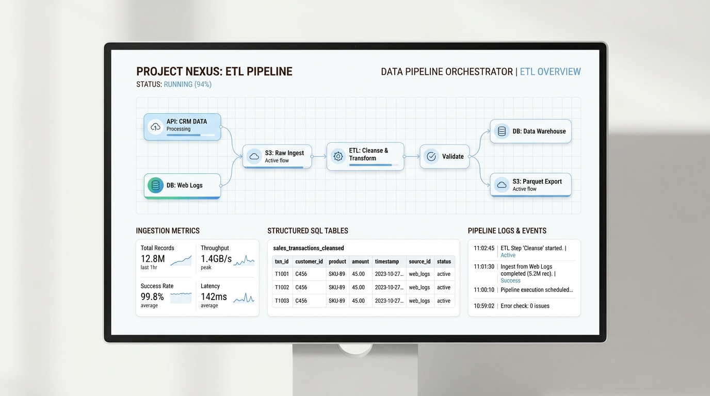
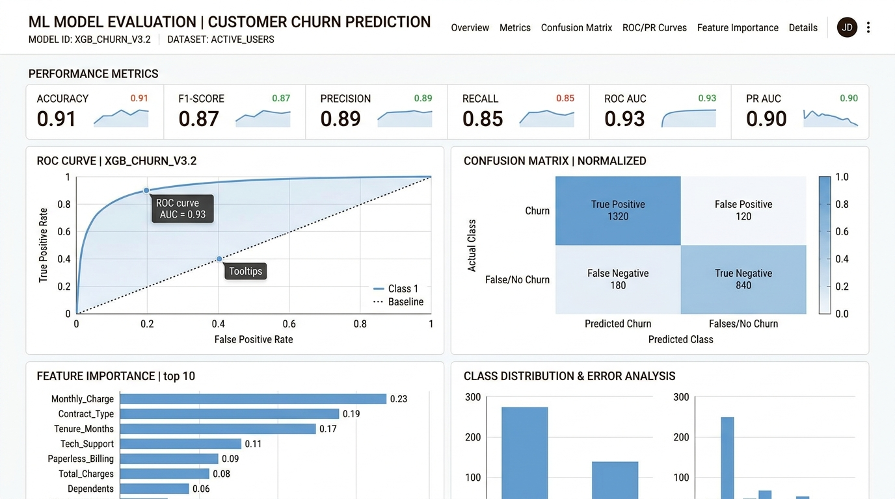
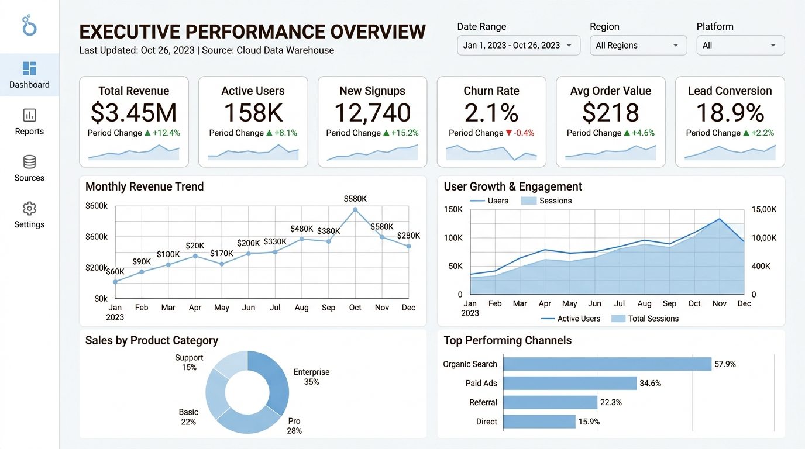

Profissional com trajetória em fluxos de trabalho para grandes players globais (Netflix, HBO, Globoplay, Amazon Prime Video). Atuação na área de Marketing e Dados, desenvolvendo projetos analíticos em Trade Marketing para mensuração de desempenho de vídeos em marketplaces, unindo Python, SQL e processos ETL/ELT. Graduanda em Ciência da Computação.
Experiência em fluxos e entregas para grandes marcas e canais
Ferramentas, bibliotecas e ambientes de nuvem empregados no desenvolvimento de pipelines e modelos analíticos.
Dados & Ciência
Manipulação massiva, limpeza, transformações estatísticas e modelagem preditiva com Scikit-Learn.
Dados & Consultas
Procedures, Joins complexos, CTEs, Window Functions e otimização de consultas relacionais.
Engenharia de Dados
Construção de pipelines automatizados de extração, transformação e carga com controle de integridade.
Nuvem & Infra
Arquitetura de nuvem OCI, bancos autônomos (Autonomous Database), APEX e armazenamento seguro.
Versionamento & CI/CD
Controle de versão estruturado, branches, Pull Requests, documentação e repositórios colaborativos.
BI & Visualização
Dashboards interativos executivos, acompanhamento de KPIs de negócio e relatórios automatizados.
Universidade Anhembi Morumbi
2024 – 2028
Formação aprofundada em fundamentos de computação, estruturas de dados, algoritmos, cálculo, bancos de dados relacionais e distribuídos, engenharia de software e inteligência artificial.
Alura + Oracle Next Education
2025 – 2026
Imersão técnica intensiva com mais de 130 horas de capacitação prática aplicada em todo o ciclo de vida dos dados, desde a modelagem preditiva e engenharia de dados até computação em nuvem.
Universidade Anhembi Morumbi
2010 – 2013
Formação que consolidou excelência técnica, gestão de fluxos de trabalho de altíssima fidelidade e entrega para os maiores canais e plataformas de streaming globais.
Editora de Vídeo
Criação de conteúdos audiovisuais e desenvolvimento de projetos de dados para a área de Trade Marketing na Mondial e Aiwa, focando na análise de desempenho de vídeos nos marketplaces e automações com IA.
Editora de Vídeo
Atuação em uma das mais prestigiadas produtoras do Brasil, editando obras de grande porte e projetos de alcance nacional para a Rede Globo e grandes agências.
Finalizadora de Vídeo
Atuação na finalização técnica e atendimento sob altos padrões de conformidade para as maiores plataformas mundiais de streaming.
Certificação internacional comprovando proficiência em arquitetura de nuvem Oracle, Autonomous Database, segurança em nuvem (IAM), computação e governança de custos.
Imersão colaborativa simulando ambiente real de software com squads multidisciplinares internacionais de dados, backend e frontend para resolver problemas reais com metodologias ágeis.
Aplicações práticas com código aberto, modelagens completas e arquiteturas implementadas.

Pipeline completo de extração via API/Arquivos, tratamento estruturado com Pandas e carga em banco de dados relacional MySQL com procedures para consultas analíticas.

Modelagem supervisionada com Scikit-Learn para classificação e regressão, incluindo engenharia de atributos (feature engineering), validação cruzada e avaliação de métricas.

Dashboard interativo construído no Google Looker Studio conectado a banco de dados em nuvem Oracle (OCI), com filtros dinâmicos e métricas de desempenho em tempo real.